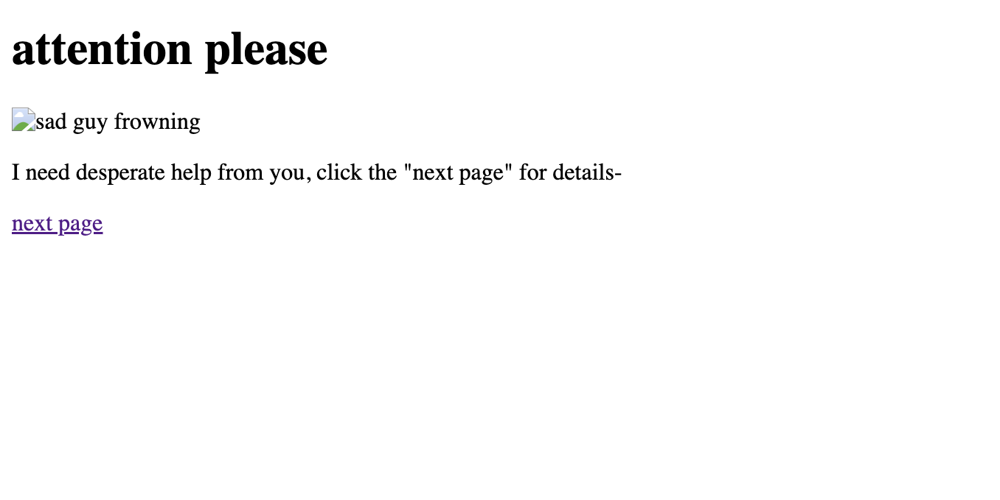

net art pageEntry for Net Art assignment for ART 74. This website I made is a satirical parody on scam websites who used to make up false stories in order to scam you into giving them money. An old narrative that comes to mind that these scammers used to use is the "Nigerian Prince" narrative that, admittedly, a lot of people fell for back in the day. I thought it would be funny to experiment with dialogue and imitate, but exaggerate the persuasiveness that scammers had back in the day. Click the link on the very last page for a surprise :) Published Oct 10, 2026.